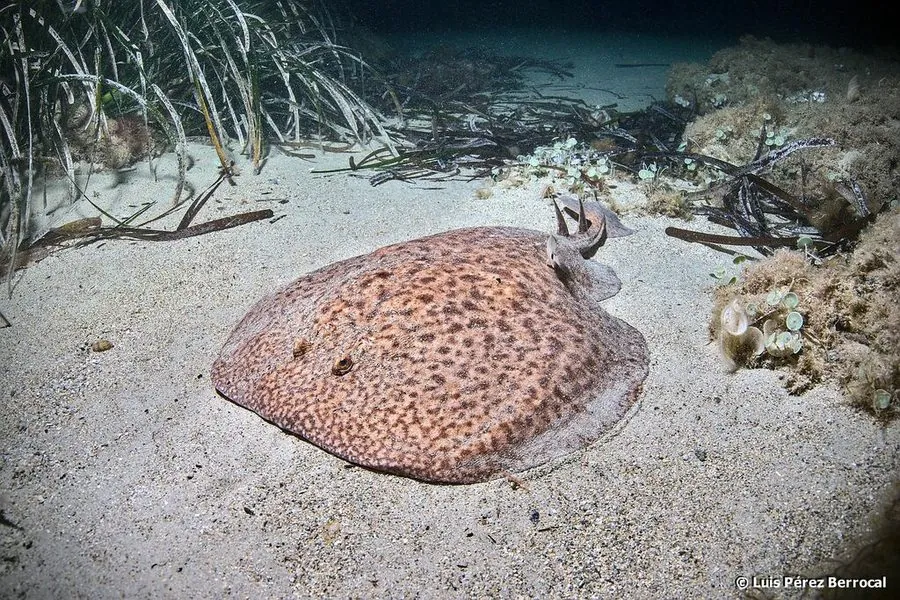

鱼类 · 动物界
电鳐 Torpedo marmorata

地中海与东大西洋的带电鳐类，体盘圆厚、布满大理石状斑纹，两侧发电器官可放出数十伏电压击晕猎物，自古为人所知。
- 分类
- 门脊索动物门纲软骨鱼纲目电鳐目科电鳐科属电鳐属
- 栖息环境
- 沿岸沙泥底、海草床、礁区与河口附近，常埋身沙中
- 地理分布
- 地中海、东大西洋，从英国南部至南非西北部沿岸
- 保护级别
- IUCN 数据缺乏（DD）
物种志
电鳐体盘宽大而厚实，呈圆形或亚圆形，成体体长 30–60 厘米，最大可达 1 米，体重数千克。背面呈褐、灰褐与浅色交织的大理石状斑纹，腹面白色，皮肤光滑；尾粗短，尾鳍发达，背鳍两个且靠近尾端，与尾部细长的魟类明显不同。体盘两侧各有一对由肌肉特化而成的发电器官，可产生约 30–50 伏、个别可达 200 伏的放电。
它们分布于地中海与东大西洋的沿岸沙泥底、海草床与礁区，白天多埋身沙中只露出眼睛与喷水孔，夜间出来捕食鱼类、甲壳类与多毛类。捕猎时先靠近猎物再突然放电，将对方击晕后整个吞下；遇敌时也用放电自卫，足以让潜水者手臂发麻。繁殖为卵胎生，每胎数尾至十余尾，胚胎在母体内约一年。由于底拖网兼捕与近岸栖息地破坏，其局部种群有所下降，但整体尚缺乏系统评估。
形态与习性
- 体长约 30–60 cm，最大可达 1 m
- 放电能力约 30–50 V，个别个体可达 200 V
- 食性鱼类、甲壳类与多毛类
- 繁殖卵胎生，每胎数尾至十余尾，妊娠约一年
- 栖息方式白天埋身沙中，仅露出眼与喷水孔
- 斑纹背面大理石状褐色与浅色斑块交织
- 寿命估计 10–15 年
趣味知识
- 电鳐两侧的发电器官由肌肉特化而来，能放出几十伏电压击晕猎物。
- 它白天把身体埋进沙里，只露出两只眼睛和喷水孔。
- 古希腊人早就知道电鳐会放电，还用它来缓解疼痛。